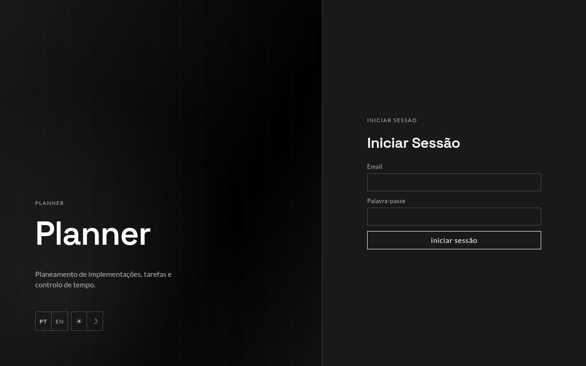
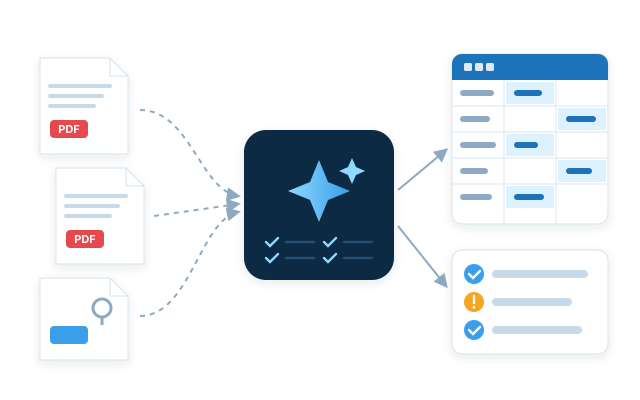
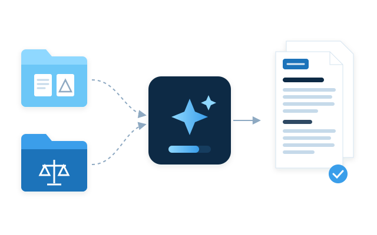

Primeiro o bloqueio
Uma operação anda à velocidade do seu passo mais lento. Melhorar outro ponto qualquer quase não muda o resultado, por isso começamos por encontrar o que realmente trava.
Automação com IA e sistemas para controlo e produtividade das empresas
Conhecemos as operações por dentro e as ferramentas de IA que as libertam de trabalho repetitivo. Começamos por encontrar o ponto que mais trava a sua empresa, resolvemo-lo e medimos o resultado.
Muitos consultores sabem de tecnologia ou de operações. Nós trabalhamos nos dois lados: já implementámos sistemas em empresas industriais e de logística, levantámos requisitos, testámos e formámos utilizadores. Por isso a automação que propomos encaixa nos processos reais e não fica a ser uma demonstração.
Como pensamos
A tecnologia é só uma parte do trabalho. O resto é perceber o processo, decidir o que mudar e garantir que a mudança fica.
Uma operação anda à velocidade do seu passo mais lento. Melhorar outro ponto qualquer quase não muda o resultado, por isso começamos por encontrar o que realmente trava.
Partimos cada objetivo em ações pequenas e concretas. Fica claro o que se elimina, o que se normaliza e o que vale a pena automatizar.
Cada automação é posta à prova com um conjunto de casos reais antes de entrar em uso e é afinada até ser fiável.
Medimos o ponto de partida antes de mexer em nada, para que o ganho se veja em números e não em impressões.
Serviços
Do levantamento de requisitos ao arranque: mapeamos os fluxos de trabalho, eliminamos passos sem valor, configuramos o software, migramos e validamos dados, testamos e formamos a equipa.
A IA lê os documentos de cada processo e preenche relatórios, minutas e folhas de cálculo com regras estritas: só dados que constam dos documentos, conflitos assinalados e validação independente.
Ferramentas simples, feitas à medida da forma como a sua equipa trabalha, em vez de folhas de cálculo dispersas e emails perdidos.
Casos

Gestão de projetos · Aplicação web

Imobiliário · Automação com IA

Arquitetura · Automação com IA
Como trabalhamos
Pensado para pequenas empresas: começamos pelo que mais trava a operação e só avançamos quando há resultados à vista.
Falamos com a gestão e com quem faz o trabalho, mapeamos o processo e medimos o ponto de partida. Identificamos o bloqueio e partimos o objetivo em tarefas concretas. Sai uma proposta clara, com prioridades e custo.
Resolvemos o bloqueio num caso real, em poucas semanas. Testamos a solução com casos reais e comparamos o antes e o depois, para decidir com factos se vale a pena continuar.
Alargamos ao resto da operação com procedimentos normalizados, formação e materiais de apoio para que a equipa ganhe autonomia. Continuamos a medir e a afinar.
Sobre
Consultoria em processos, sistemas e automação com IA · Porto
Somos uma equipa que trabalha entre as operações e a tecnologia. A nossa experiência vem do terreno:
Marque uma chamada de 30 minutos, sem compromisso. Sai da conversa com uma ideia clara do que pode ser otimizado ou automatizado e por onde começar.